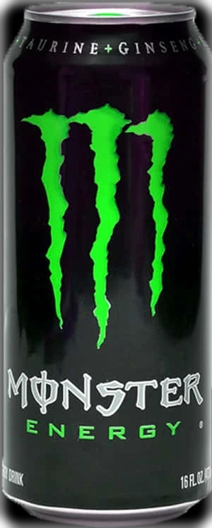
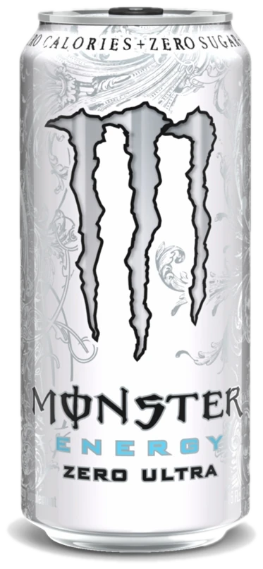
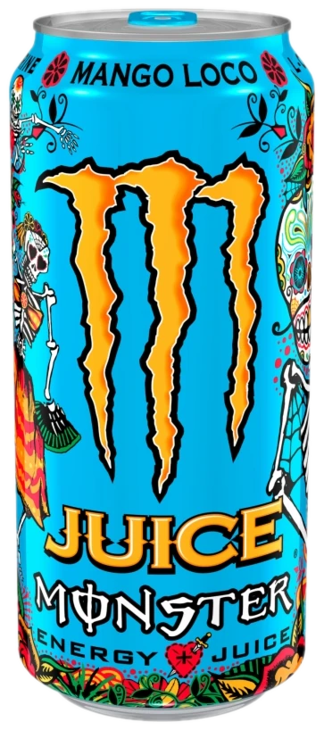
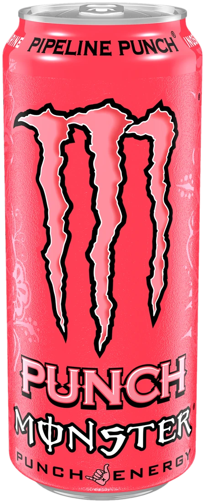
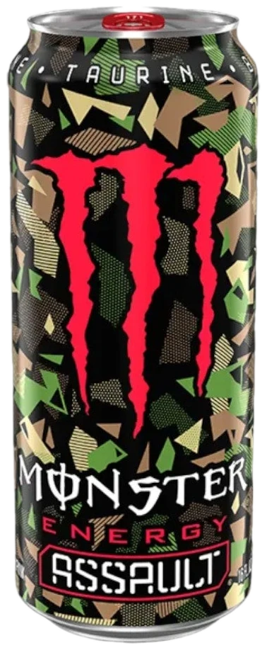
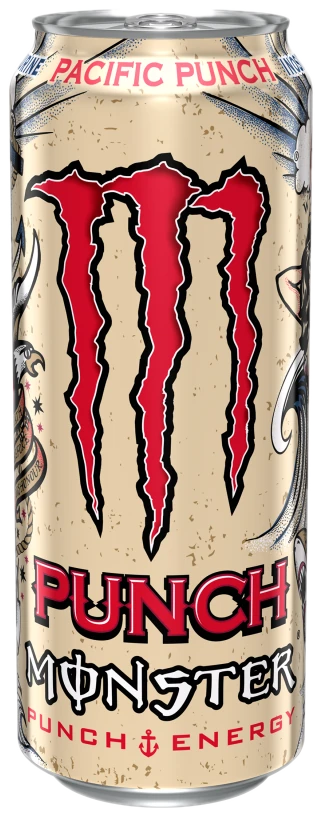

LIBÈRE LA BÊTE

Caféine, taurine, ginseng et vitamines B. Six parfums, une seule bête. Découvre la gamme qui règne sur les circuits, les scènes et les setups gaming.
Choisis ta bête
Six cannettes, six personnalités. Chaque saveur a son caractère — scroll pour toutes les rencontrer.
Monster Original
Celle qui a tout lancé. Un goût complexe, doux et corsé à la fois, avec la puissance du blend original. La canette noire aux trois griffes vertes — la plus reconnaissable au monde.
Monster Ultra
Le monstre en tenue blanche. La pleine puissance du blend sans un gramme de sucre : une saveur légère et pétillante, à la limite du soda d'été. Ultra White, celle des accros au zéro sucre.

Mango Loco
Un carnaval dans une canette. Du vrai jus de mangue mélangé au blend Monster pour une vague tropicale explosive. Inspirée du Día de Muertos, impossible de louper les festivités.

Pipeline Punch
Fruit de la passion, orange et goyave : une gifle tropicale inspirée du spot de surf légendaire Banzai Pipeline d'Hawaï. La vague qui te pousse au-delà de tes limites.

Monster Assault
Version camouflage, attitude maximum. Un goût punchy et intense pour les missions qui ne dorment jamais. La canette des gamers de nuit et des soldats du grind.

Pacific Punch
Un océan de fruits rouges : framboise, pomme, cerise et fruits de la passion réunis dans une vague électrisante. Le punch qui vient du large et frappe fort.

Le blend énergisant
La formule maison : une association de caféine, taurine, glucuronolactone, inositol, extrait de ginseng et vitamines B. Voilà ce qu'il y a, en moyenne, dans une canette de 500 ml d'une Monster classique.
Caféine
Le carburant principal. Environ deux expressos par canette de 500 ml, pour un coup de fouet immédiat.
Taurine
Acide aminé emblématique des boissons énergisantes. Celle de Monster est de synthèse, d'origine non animale.
Ginseng
Extrait de ginseng — la racine utilisée comme tonique en Asie depuis des siècles.
Vitamines B
Vitamines B2, B3, B6 et B12 qui contribuent à un métabolisme énergétique normal et réduisent la fatigue.
Les chiffres par parfum
Valeurs moyennes pour 100 ml — indicatives, chaque pays peut varier légèrement.
| Parfum | Énergie | Sucres | Caféine | Particularité |
|---|---|---|---|---|
| Original | 46 kcal | 11 g | 32 mg | La recette culte |
| Ultra | 3 kcal | 0 g | 30 mg | Zéro sucre |
| Mango Loco | 45 kcal | 11 g | 32 mg | 16 % jus de fruits |
| Pipeline Punch | 50 kcal | 12 g | 32 mg | Fruits de la passion |
| Assault | 49 kcal | 12 g | 32 mg | Édition camouflage |
| Pacific Punch | 47 kcal | 12 g | 32 mg | Mélange baies rouges |
Foire aux questions
Les Monster classiques contiennent 32 mg de caféine pour 100 ml, soit 160 mg pour une grande canette de 500 ml (80 mg pour une 250 ml). C'est l'équivalent d'environ deux expressos. À garder en tête : la limite quotidienne recommandée pour un adulte est de 400 mg, toutes sources de caféine confondues.
Le blend Monster associe caféine, taurine, glucuronolactone, inositol, extrait de ginseng et vitamines du groupe B (B2, B3, B6, B12). La caféine apporte l'effet stimulant, tandis que les vitamines B contribuent à un métabolisme énergétique normal. La taurine et la glucuronolactone complètent la formule signature.
Non, jamais. Monster Energy est une boisson énergisante sans alcool. Le taux d'« énergie » vient de la caféine et des sucres, pas d'alcool. Le mélange avec des boissons alcoolisées est d'ailleurs déconseillé : la caféine peut masquer les effets de l'alcool.
Oui, toute une gamme : la famille Ultra. La plus célèbre est l'Ultra White (la blanche), mais il existe aussi Ultra Black, Ultra Blue, Ultra Rosa et bien d'autres. Elles utilisent des édulcorants à la place du sucre, avec environ 3 kcal pour 100 ml. Le goût reste fidèle au style Monster.
Non. Contrairement à une légende tenace, la taurine utilisée dans les boissons énergisantes est de synthèse en laboratoire — elle ne vient pas de taureau ni d'aucun animal. Les Monster classiques ne contiennent pas d'ingrédients d'origine animale.
Comme toute boisson à teneur élevée en caféine : les enfants, les adolescents, les femmes enceintes ou allaitantes, ainsi que les personnes sensibles à la caféine ou souffrant de troubles cardiaques. Pour les autres, c'est la même règle que le café : avec modération, et jamais juste avant de dormir.
La caféine peut donner un boost avant un effort, mais attention : une Monster n'est pas une boisson d'hydratation. Elle ne remplace pas l'eau pendant l'exercice. Si tu t'entraînes intensément, privilégie l'eau ou une boisson de l'effort, et garde la canette comme coup de fouet ponctuel.
Rejoins la meute
Nouveaux parfums, events, collabs gaming et drops limités : sois le premier au courant. Promis, pas de spam — que de l'énergie brute.
Regarde ta boîte, la bête rôde déjà.
En t'inscrivant tu acceptes notre politique de confidentialité façon bête : on ne revend rien, jamais.